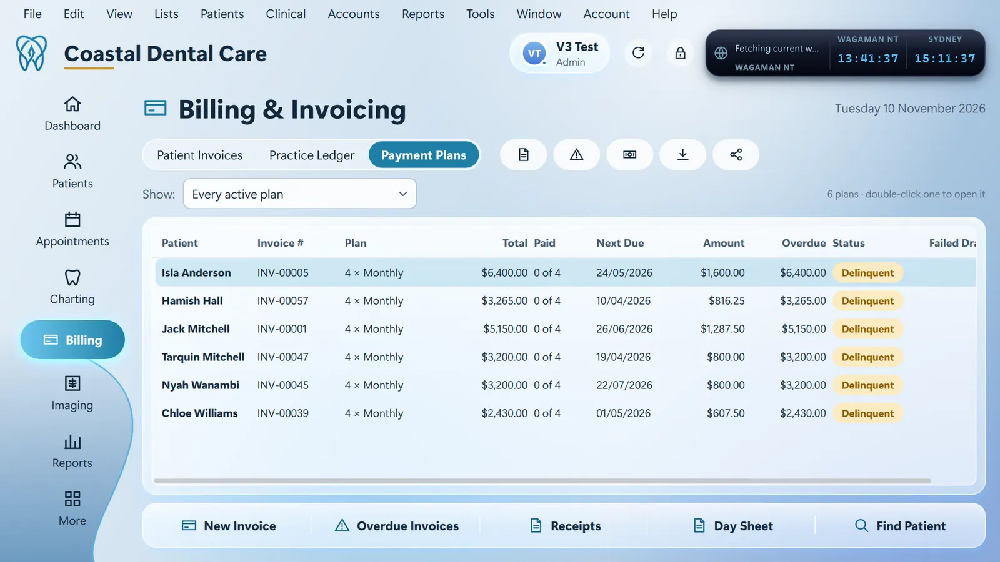
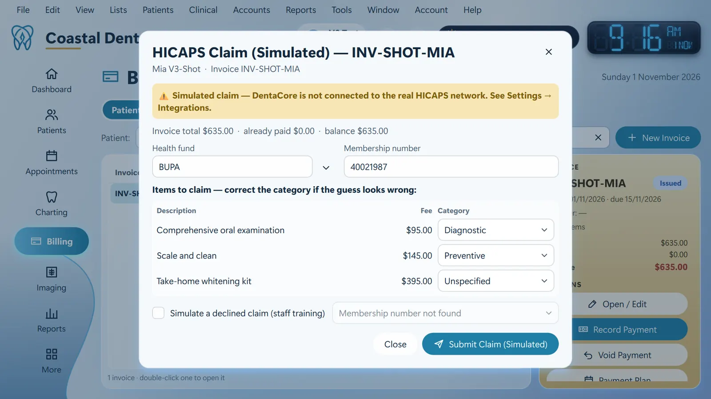

01 / 05 · Contracts & payments
Every contract on one screen
Billing → Payment Plans
In orthodontic mode, Billing opens on Payment Plans: every treatment contract and where it's up to.
- Each active plan with what's been paid, the next instalment and anything overdue.
- Overdue instalments show on the Dashboard too.
- The invoice balance always reflects what's really been paid.

02 / 05 · Contracts & payments
Set the contract up on the invoice
Invoice → Payment Plan
Split the treatment fee into instalments with a schedule DentaCore works out.
- Choose the number of payments, weekly, fortnightly or monthly, and the start date.
- Print a payment plan agreement for the family to sign.
- Record each instalment as it's paid, and the plan completes itself with the last one.

03 / 05 · Contracts & payments
When an automatic draft fails
Payment Plans → Mark Draft Failed
When your bank or card provider reports a failed draft, record it so the front desk can follow it up.
- Mark the instalment as failed, with the reason the bank gave.
- Failed drafts are counted on the Dashboard until they're resolved.
- Paying the instalment, or Clear Failed Draft, resolves it.
- DentaCore doesn't draft money itself. The mark records what the bank said.
04 / 05 · Contracts & payments
Health fund claims at the desk
Invoice → Process HICAPS Claim
Claim the orthodontic items from the patient's health fund from the invoice.
- Pick the fund and the membership number, and check each line's item category.
- See each line's benefit, then record the gap as a payment.
- Live claiming connects through Tyro Health. Until a practice's connection is certified, claims run in a clearly labelled training mode.

05 / 05 · Contracts & payments
GST and exports for your accountant
Reports → Accounting Export
Send the practice's figures to Xero or MYOB AccountRight.
- By BAS quarter or financial year.
- GST on the lines that carry it.